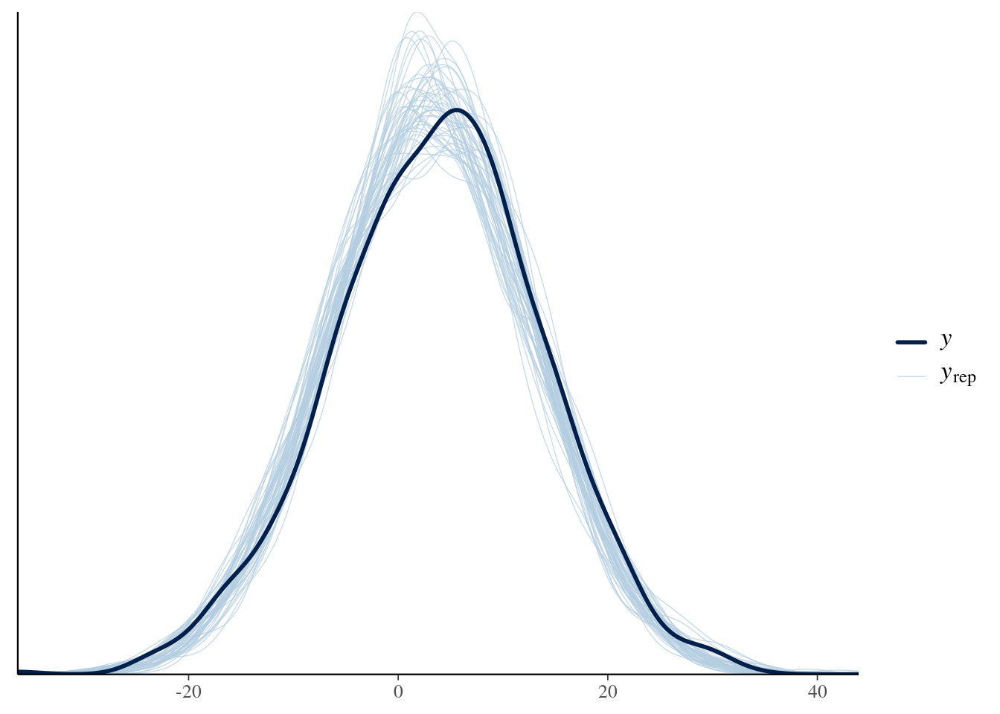

data {
int<lower=1> N;
vector[N] t;
}
parameters {
real mu;
real<lower = 0> sigma;
}
model {
// priors:
target += normal_lpdf(mu | 400, 10);
target += normal_lpdf(sigma | 100, 10) - normal_lccdf(0 | 100, 10);
// likelihood
target += normal_lpdf(t | mu, sigma);
}Exercises chapter 10
Exercise 10.1 A very simple model.
In this exercise we revisit the model from 3.2.1. Assume the following:
- There is a true underlying time, \(\mu\), that the subject needs to press the space bar.
- There is some noise in this process.
- The noise is normally distributed (this assumption is questionable given that response times are generally skewed; we fix this assumption later).
That is the likelihood for each observation \(n\) will be:
\[
t_n \sim \mathit{Normal}(\mu, \sigma)
\] a. Decide on appropriate priors and fit this model in Stan. Data can be found in df_spacebar.
| term | estimate | std.error | conf.low | conf.high |
|---|---|---|---|---|
| mu | 172.91 | 1.42 | 170.18 | 175.80 |
| sigma | 26.12 | 1.03 | 24.22 | 28.24 |
- Change the likelihood to a log-normal distribution and change the priors. Fit the model in Stan.
data {
int<lower=1> N;
vector[N] t;
}
parameters {
real mu;
real<lower = 0> sigma;
}
model {
// priors:
target += normal_lpdf(mu | 6, 1.5);
target += normal_lpdf(sigma | 0, 1) - normal_lccdf(0 | 0, 1);
// likelihood
target += lognormal_lpdf(t | mu, sigma);
}| term | estimate | std.error | conf.low | conf.high |
|---|---|---|---|---|
| mu | 5.12 | 0.01 | 5.10 | 5.13 |
| sigma | 0.13 | 0.01 | 0.13 | 0.15 |
| 2.5% | 50% | 97.5% |
|---|---|---|
| 164.72 | 167.03 | 169.54 |
Exercise 10.2 Incorrect Stan model.
We want to fit both response times and accuracy with the same model. We simulate the data as follows:
N <- 500
df_sim <- tibble(
rt = rlnorm(N, mean = 6, sd = .5),
correct = rbern(N, prob = .85)
)We build the following model:
data {
int<lower = 1> N;
vector[N] rt;
array[N] int correct;
}
parameters {
real<lower = 0> sigma;
real theta;
}
model {
target += normal_lpdf(mu | 0, 20);
target += lognormal_lpdf(sigma | 3, 1)
for(n in 1:N)
target += lognormal_lpdf(rt[n] | mu, sigma);
target += bernoulli_lpdf(correct[n] | theta);
}Why does this model not work?
Try to make it run. (Hint: There are several problems.)
data {
int<lower = 1> N;
vector[N] rt;
array[N] int correct;
}
parameters {
real mu;
real<lower = 0> sigma;
real theta;
}
model {
target += normal_lpdf(mu | 0, 20);
target += lognormal_lpdf(sigma | 3, 1);
for(n in 1:N) {
target += lognormal_lpdf(rt[n] | mu, sigma);
target += bernoulli_lpmf(correct[n] | theta);
}
}| term | estimate | std.error | conf.low | conf.high |
|---|---|---|---|---|
| mu | 6.03 | 0.02 | 5.99 | 6.07 |
| sigma | 0.48 | 0.02 | 0.46 | 0.51 |
| theta | 0.86 | 0.01 | 0.83 | 0.89 |
Exercise 10.3 Using Stan documentation.
Edit the simple example with Stan from section 10.2, and replace the normal distribution with a skew normal distribution. (Don’t forget to add a prior to the new parameter, and check the Stan documentation or a statistics textbook for more information about the distribution).
Fit the following data:
Y <- rnorm(1000, mean = 3, sd = 10)data {
int<lower = 1> N; // Total number of trials
vector[N] y; // Score in each trial
}
parameters {
real xi;
real<lower=0> omega;
real alpha;
}
model {
// Priors:
target += normal_lpdf(alpha | 0, 2);
target += normal_lpdf(xi | 0, 2);
target += lognormal_lpdf(omega | 0, 1);
// Likelihood:
for(i in 1:N)
target += skew_normal_lpdf(y[i] | xi, omega, alpha);
}
generated quantities {
array[N] real y_pred;
for(i in 1:N)
y_pred[i] = skew_normal_rng(xi, omega, alpha);
}| term | estimate | std.error | conf.low | conf.high |
|---|---|---|---|---|
| xi | 0.87 | 1.62 | −2.07 | 4.35 |
| omega | 10.08 | 0.44 | 9.40 | 11.14 |
| alpha | 0.32 | 0.23 | −0.15 | 0.75 |

Exercise 10.4 The probit link function as an alternative to the logit function.
The probit link function is the inverse of the CDF of the standard normal distribution (\(Normal(0,1)\)). Since the CDF of the standard normal is usually written using the Greek letter \(\Phi\) (Phi), the probit function is written as its inverse, \(\Phi^{-1}\) . Refit the model presented in 10.4.3 changing the logit link function for the probit link (that is transforming the regression to a constrained space using Phi() in Stan).
You will probably see the following as the model runs; this is because the probit link is less numerically stable (i.e., under- and overflows) than the logit link in Stan. Don’t worry, it is good enough for this exercise.
- Do the results of the coefficients \(\alpha\) and \(\beta\) change?
- Do the results in probability space change?
data {
int<lower = 1> N;
int<lower=0> K; // number of predictors
matrix[N, K] X; // model matrix
array[N] int correct;
}
parameters {
real alpha;
vector[K] beta;
}
model {
// priors including all constants
target += normal_lpdf(alpha | 0, 1.5);
target += normal_lpdf(beta | 0, .1);
target += bernoulli_lpmf(correct | Phi(alpha + X * beta));
}| term | estimate | std.error | conf.low | conf.high |
|---|---|---|---|---|
| alpha | 1.33 | 0.20 | 0.93 | 1.74 |
| beta[1] | −0.22 | 0.07 | −0.35 | −0.09 |
| beta[2] | −0.02 | 0.02 | −0.07 | 0.03 |
| beta[3] | 0.00 | 0.01 | −0.02 | 0.02 |
Exercise 10.5 Examining the position of the queued word on recall.
Refit the model presented in section 10.4.3 and examine whether set size, trial effects, the position of the queued word (tested in the data set), and their interaction affect free recall. (Tip: You can do this exercise without changing the Stan code.).
How does the accuracy change from position one to position two?
data {
int<lower = 1> N;
int<lower=0> K; // number of predictors
matrix[N, K] X; // model matrix
array[N] int correct;
}
parameters {
real alpha;
vector[K] beta;
}
model {
// priors including all constants
target += normal_lpdf(alpha | 0, 1.5);
target += normal_lpdf(beta | 0, .1);
target += bernoulli_logit_glm_lpmf(correct | X, alpha, beta);
}
generated quantities {
real change_acc = inv_logit(alpha + beta[3] * 2) - inv_logit(alpha + beta[3] * 1);
}| term | term2 | estimate | std.error | conf.low |
|---|---|---|---|---|
| alpha | Intercept | 2.30 | 0.49 | 1.39 |
| beta[1] | c_set_size | −0.12 | 0.09 | −0.30 |
| beta[2] | c_trial | 0.03 | 0.06 | −0.09 |
| beta[3] | tested | 0.06 | 0.09 | −0.12 |
| beta[4] | c_set_size:c_trial | −0.03 | 0.03 | −0.10 |
| beta[5] | c_set_size:tested | −0.08 | 0.04 | −0.17 |
| beta[6] | c_trial:tested | −0.03 | 0.02 | −0.08 |
| beta[7] | c_set_size:c_trial:tested | 0.01 | 0.01 | −0.01 |
| 2.5% | 50% | 97.5% |
|---|---|---|
| −0.01 | 0.00 | 0.02 |
Exercise 10.6 The conjunction fallacy.
Paolacci, Chandler, and Ipeirotis (2010) examined whether the results of some classic experiments differ between a university pool population and subjects recruited from Mechanical Turk. We’ll examine whether the results of the conjunction fallacy experiment (or Linda problem: Tversky and Kahneman 1983) are replicated for both groups.
| source | answer |
|---|---|
| mturk | 1 |
| mturk | 1 |
| mturk | 1 |
| mturk | 0 |
| mturk | 1 |
| mturk | 0 |
The conjunction fallacy shows that people often fail to regard a combination of events as less probable than a single event in the combination (Tversky and Kahneman 1983):
Linda is 31 years old, single, outspoken, and very bright. She majored in philosophy. As a student, she was deeply concerned with issues of discrimination and social justice, and also participated in anti-nuclear demonstrations.
Which is more probable?
- Linda is a bank teller.
- Linda is a bank teller and is active in the feminist movement.
The majority of those asked chose option b even though it’s less probable (\(\Pr(a \land b)\leq \Pr(b)\)) . The data set is named df_fallacy and it indicates with 0 option “a” and with 1 option b. Fit a logistic regression in Stan and report:
- The estimated overall probability of answering (b) ignoring the group.
- The estimated overall probability of answering (b) for each group.
data {
int<lower = 1> N;
array[N] int answer;
array[N] int source;
}
parameters {
real alpha;
real beta;
}
model {
// priors including all constants
target += normal_lpdf(alpha | 0, 1.5);
target += normal_lpdf(beta | 0, .1);
for (n in 1:N)
target += bernoulli_lpmf(answer | inv_logit(alpha + beta * source[n]));
}| source | 2.5% | 50% | 97.5% |
|---|---|---|---|
| mturk | 0.77 | 0.78 | 0.78 |
| university | 0.77 | 0.78 | 0.78 |
| diff | −0.01 | 0.00 | 0.01 |